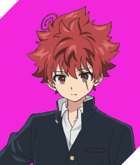
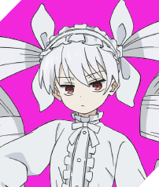
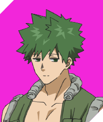
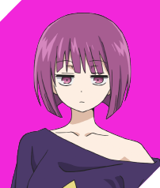
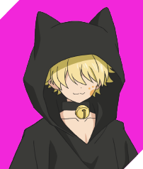
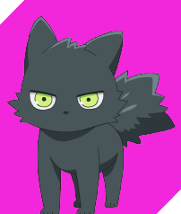

| キャラクター | 名前 | 詳細 | 声優 |
|---|---|---|---|
|  | 朝野太陽 | スパイ一家の婿入り少年極度の人見知りだが、ごく平凡な男子高校生。数年前に家族を事故で失い、大切な人を作ることにトラウマを持ち、他人との関わりを極端に恐れるようになった。自分よりも他人を優先してしまうほどのお人好しで、心優しい性格。六美とは幼なじみの間柄。六美の正体を知り、彼女を守るためスパイ一家の夜桜家へ婿入りした。大切なモノを守り抜くという芯の強さがあり、夜桜家の一員として生きるために一人前のスパイを目指す。 |
川島零士 |
| 夜桜六美 | 夜桜家10代目当主幼なじみの太陽と同じ高校へ通う女子高校生で、学園のアイドル的存在。その正体は、江戸の忍を起源として代々伝わるスパイ一家・夜桜家の三女で、10代目当主。特殊な立場から様々な敵勢力から常に命を狙われており、兄妹たちに守られて暮らしている。 |
本渡楓 | |
| 夜桜凶一郎 | 実力・人気ナンバー１ 最凶の長男夜桜家の長男。実力・人気共にナンバー１の優秀なスパイ。常に笑顔を絶やさず、見た目は好青年。昼川という偽名で、太陽や六美が通う高校の教頭も務めている。異常なほど六美を溺愛しており、六美との距離が近い太陽のことを敵視し、排除を企んでいる。弟妹愛が異常に強く、特に三女の六美への愛情が常軌を逸して激しいため、家族からは変態扱いされている。愛用武器は夜桜家伝統の糸状の武器「鋼蜘蛛」。 |
小西克幸 | |
|  | 夜桜二刃 | 合気道と柔術の達人の長女夜桜家の長女。一家をまとめる家長的存在で、弟妹からも慕われている。年齢の割にかなり小柄で童顔。ゴスロリ系のファッションを好んで常に着用している。体術に長けており、合気道と柔術の達人。 |
鬼頭明里 |
|  | 夜桜辛三 | 武器スペシャリストの次男夜桜家の次男。あらゆる武器を愛し、武器においては夜桜家イチの知識を持ち、それらを意のままに操るスペシャリスト。常に上半身裸で過ごしており、逞しい筋肉美を誇る屈強な体格の持ち主。 |
興津和幸 |
|  | 夜桜四怨 | 天才ハッカー＆ゲーマーな次女夜桜家の次女。機械全般に精通したハッキングの天才で、夜桜家の機械回りの管理を担っている。ガサツで男勝りな性格で、常に気だるげな雰囲気を醸し出している。ゲーマーとしてクソゲーだろうと全力で楽しむのがモットー。 |
悠木碧 |
|  | 夜桜嫌五 | 自由気ままな変装名人の三男夜桜家の三男。変装の名人で、老若男女・体格が異なるあらゆる人物に化けることができる。特に身内の変装なら外見や声色はもちろん、まつ毛の本数まで忠実に再現できる。性格は陽気で、気ままな自由人。 |
松岡禎丞 |
| 夜桜七悪 | 怪力にして医術に特化した四男夜桜家の四男。医術や薬学に特化しており、一家の医療班を担う。常に顔が描かれたバケツを被り、素顔を隠している。兄妹の中でも髄一の巨体と怪力の持ち主。誰にでも優しく、控えめな性格。 |
内山タ実 | |
|  | ゴリアテ | 夜桜家の愛犬夜桜一家と一緒に生活している愛犬。人間の言葉を理解し、任務のサポートをするなど非常に高い知能を持つ。忠誠心が強く、夜桜家の敵と認識した者には牙を剥く。 |
松岡禎丞 |